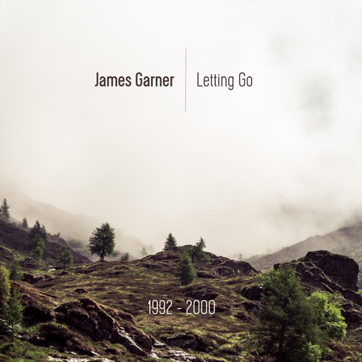

Releases, recordings, and where to find them.

A collection of old demos from 1992–2000, gathered together as an album. These are rough, early recordings — not studio quality — kept online as a snapshot of where the songwriting began.
For the current sound, start with Silent Whispers above.
Original music available for licensing. Get in touch to discuss your project.
Enquire About Licensing